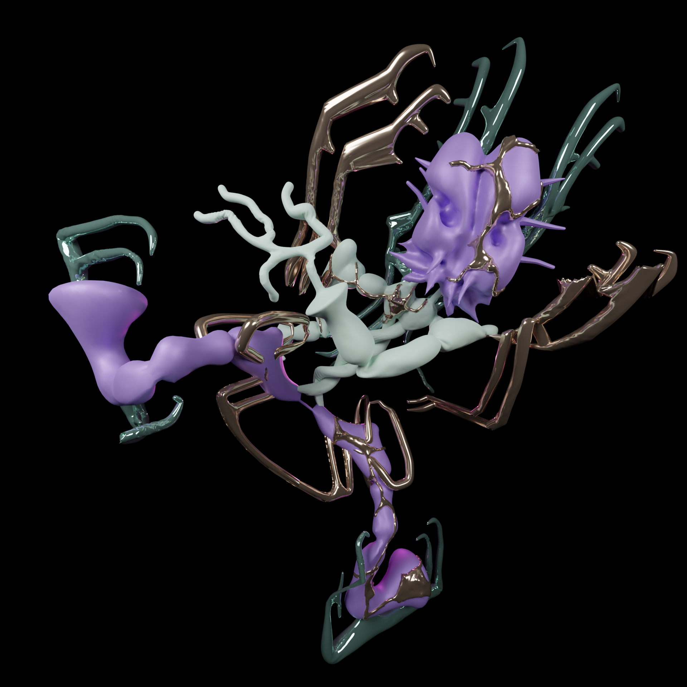
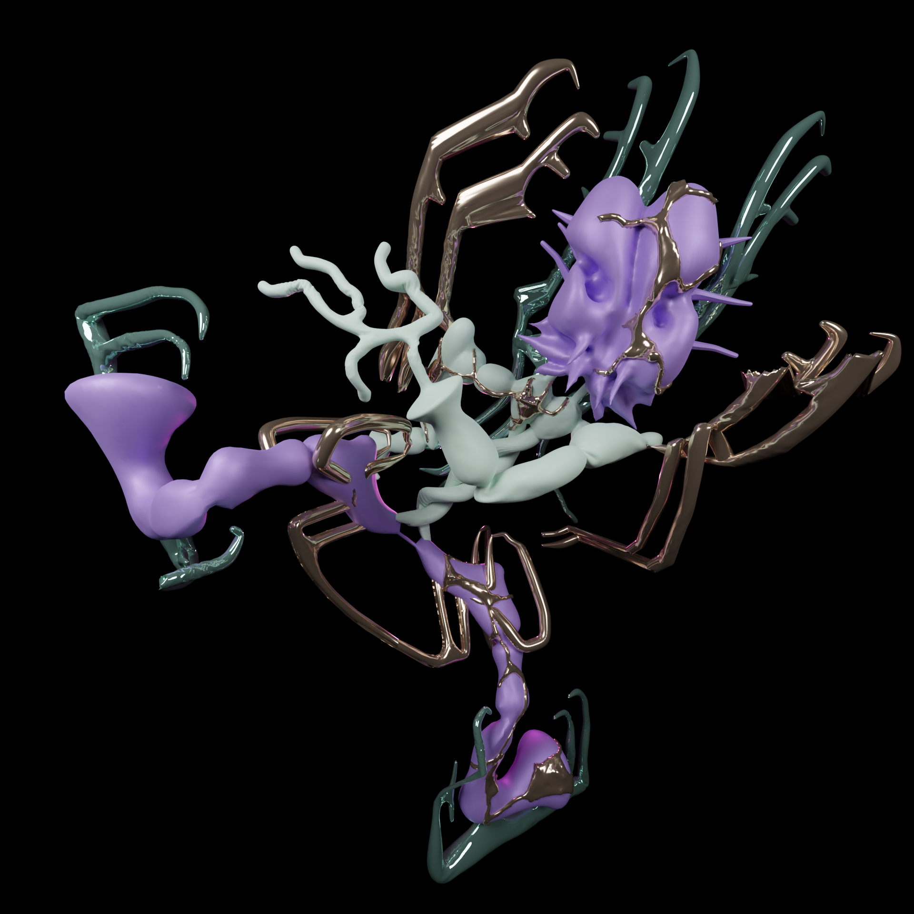

xcbwjebc Jentian
population: 17232
origin: c8adcn city
buddhist pagodas becoming alive very peaceful love dancing disco twisty body.These small, winged creatures are covered in phosphorescent scales that emit a soft, pulsating light. They use their glow to attract insects, which they capture with their sticky tongues. Glowhoppers are harmless to humans and are considered good luck by Jentians.
ßå¢k †ð museum